Gestures are player-generated emotes available in Bloodborne. To access the gesture menu, hit the left side of the touchpad on your controller and then perform the action or highlight your chosen gesture and press the action button to execute. You can also use gestures by holding the X button and moving the controller in the specified direction.
You can move, although slowly, while performing some gestures (e.g. Point Forward, Wave, Shake off Cape), others have a set animation you cannot interrupt (e.g. Curtsy, Hunter's Salutation) and some have a continued animation until you decide to interrupt it (e.g. Pray, Sit Down, Make Contact).
Gestures available:
| Available from the start of the game | ||
|---|---|---|
| Icon | Name | Location |
| Point Forward | Available from start of game. | |
| 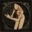 | Hunter's Salutation | Available from start of game. |
| Sit Down | Available from start of game. | |
| 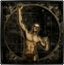 | Hunter's Rally | Available from start of game. |
| 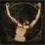 | Joy | Available from start of game. |
| 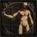 | Conviction | Available from start of game. |
| 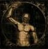 | Wave | Available from start of game. |
| Unlockable | ||
| 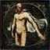 | Shake Off Cape | Learned from Eileen the Crow in her first encounter in the hidden room along rafters above the Sewer in Central Yharnam. |
| Pray | Learned from Alfred, in Cathedral Ward next to tomb entrance, by agreeing to his question. | |
| 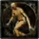 | Curtsy | Learned from Arianna, by telling her about the safe haven in the Oedon Chapel. |
| 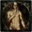 | Shhh! | Learned from Eileen the Crow in her second encounter in the Cathedral Ward |
| 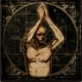 | Approval | Help Eileen the Crow fight her target in Tomb of Oedon |
| 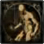 | Triumph | Learned from the Oedon Chapel NPC after you send a girl to his safe haven. |
| 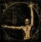 | Make Contact | Learned from standing corpse in Upper Cathedral Ward. |
| Brush Off Dust | Learned from Djura | |
| 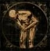 | Church Bow (male) | Learned from Alfred after giving him Unopened Summons |
| Church Bow (female) | Learned from Adella the Nun after you save her and send her to Cathedral Ward | |
| 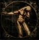 | Respect | Learned from Annalise, Queen of the Vilebloods for joining the Vilebloods |
| 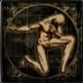 | Deep Respect | Learned from Annalise, Queen of the Vilebloods for reaching rank 1 in the Vilebloods |
| 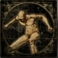 | Roar | Learned from Alfred after he kills Annalise |
| 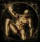 | Beg for Life | Learned from Patches the Spider in the Lecture Building. |
| 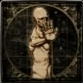 | Wait | Learned from Eileen the Crow in the Grand Cathedral encounter |
| 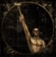 | League Oath | Learned from Valtr after crushing 1 Vermin |
Trivia:
- Using the "Shake Off Cape" Gesture near other players will move their clothing.
- Performing Gestures in front of The Plain Doll will trigger various reactions from her.
- The sound effect used for the Roar Gesture is re-used for ambient noises.
- Equipping the Impurity rune changes the League Oath gesture into placing your left hand onto your chest.
- The "Make Contact" gesture appears to form a Pythagorean triangle between the hunters fingertips and shoulder. It has been suggested that forming a Pythagorean triangle could be used in a "first contact" scenario to signal to an intelligent being that the human race understands mathematics, as right angles do not naturally occur, and is thus an intelligent species. It is possible that the gesture was used in making contact with the Old Ones.
 Anonymous
Anonymous
- Anonymous
- Anonymous
- Anonymous
Fun fact: The wolf beast strung up in Yharnam at the start of the game is strung up in the equal/opposite pose to the final pose to get the Moon rune. When the hunter swaps their arms position in from of the Brain of Mensis to get the Moon rune, they have their right hand up and left out to the side. The Wolf in Yharnam has his right extended to the side and the left is down. This is a fun observation because at that time, the Moon has not yet risen and the Sun is still in the sky.
- Anonymous
While I love the gestures in this game, whoever thought it a good idea to make gestures happen by holding x and moving the controller is a complete doucherocket. It is very inconvenient when do gesture at random when I’m being chased by a bunch of enemies and end up in a blender.
- Anonymous
After trying to help people in the cursed and defiled chalices I really wish there were gestures that meant:
"Hey, stay back and leave it to the cooperators" and "come here", bossfights finish in seconds if they make a mistake.
- Anonymous
- Anonymous
Something I just noticed with the NA version, the “Shh!” gesture is spelled with two hs not three as displayed here
- Anonymous
I don't play online.....therefore I find gestures utterly pointless, I would prefer to disable the whole process.
- Anonymous
I miss the throat cut gesture.... hell I guess DS2 did something right after all
- Anonymous
- Anonymous
If you use emotes with the beast claws your arms and hands will still be In beast form
- Anonymous
Nothing like shredding a boss or player, then standing bathed in their blood doing the roar gesture. He doesn't sound all that badass, but my god if he doesn't sound scary. Really digging it
- Anonymous
Why no "come at me bro" or as dark souls 3 put it, a "welcome" gesture. So satisfying after a hard won match. It's basically my way of saying the enemy was a worthy opponent.
There should've been a call over gesture or a beckon gesture smh
- Anonymous
I forgot to talk with Eileen the second time and didn't get the "shake off cape" gesture, if i start a NG+ I'll be able to get it?
- Anonymous
Hey, I registered all the gesture I had on a Choir character and uploaded them here : https://giphy.com/channel/evla_cythera It currently lacks one gesture but I'll upload it as soon as possible.
- Anonymous
You wait for 30 seconds and it will change direction, this is used for the brain of mensis when you drop it, you just have to use make contact in front of it and wait for 30 seconds, it gives you a special rune
- Anonymous
The "make contact" gesture is the comfiest sleeping pose. I sleep like this all the time.
- Anonymous
- Anonymous
- Anonymous
Make sure you talk to the blind beggar in Cathedral Ward before you 1) advance past Rom OR 2) rescue all remaining survivors AFTER losing one of them (sent to Clinic, killed, etc.) You won't be able to get the dialogue about having saved someone once he gets locked into the "there's no hope for yharnum" line after all the survivors who weren't lost have arrived. As a minor sidenote, you CAN still get the Triumph gesture even if you've rescued all survivors and he no longer talks to you about having brought back an individual survivor. You'll get it from talking to him at that point, ie. "Can we be friends..."
- Anonymous
this is just a funny thing to do. what you do is (you have to be walking forward until merged gesture starts) you have to bring up the gesture menu and press square to test a gesture, after that you need to quickly go to the gesture you want it to merge with and just mash square on that gesture (you still need to be pushing your analog stick forward in this stage) and stop moving forward when the gesture starts happening, not before. if done right you should get a deformed animation and its really wierd. for example: you could merge roar and league oath and look like your squating and holding a staff up! I dont think this works for all gestures, but most. if your starting, you could use joy and sit down. also if your wondering why you use square instead of X is so that you dont exit the gesture menu. sorry if this doesnt work out for you.
- Anonymous
So I have been trying this to no avail the last few days. Then it hit me .. press and hold O to initiate the gesture motion control instead of X for the Asian and R-all version of the game.
- Anonymous
Female young voice... She screams... Painfully.. Why? It sounds like she's lost her mind rather than being triumphant, I like the sound on the male though..
- Anonymous
I've noticed that the make contact gesture will sometimes change direction is this completely random or is there a way to trigger the change?
- Anonymous
I've been experimenting with distances traveled and retraveled to trigger the roar echos, and have found that the location one roars tends to mark it, similar to dropping a shining coin. In an area around that becon exists a band that must be passed through, then re-entered to trigger the echo of your own roar. It seems like roar is a sort of multiplayer gesture as well, because at rare times in locations I've spammed roars, I'll hear the roar of another gender or aged character, implying that they can hear my roars, and are crying out in reply. When I hear a roar that I myself didn't plant, I seed the area with roars in hopes that someone else out there hears the reply. Try it yourself by roaring at regular/increasing distances, then retrace your path and listen for the echos; they become predictable and easy to set. I can't be sure, and it may be my imagination and wishful thinking, but I plant roar cues around frequent invasion points like Mergo's Loft so that when invaded, the opponent will hear me in the distance forward from them no matter which direction they travel, letting me sneak in for ganks. It seems to work, but like I said, without asking my opponent I can't know for sure. What are your thoughts?
- Anonymous
Some gestures make the plain doll in hunters dream to clap her hands.
- Anonymous
While maybe not important to anything, if you hold the "Make Contact" gesture long enough your character will shift position and alternate which arm is up and which is out.
- Anonymous
I've tried on 3 different characters now but can't seem to get her to her second location to learn the Shhh gesture. I'd really like some imput here for this.
- Anonymous
So i was playing around with the plain doll and the gestures and at some point i used the roar gesture and then i ran to the back of the workshop to check if Gherman is there, and on my way back as soon as i got next to the workshop door i heard part of the roar scream for a moment. I tried doing it a couple more times and it worked everytime
- Anonymous
141 could mean 1.41 which is rad 2., the length of the hypotenuse in a right triangle if the other sides have a length of one.
- Anonymous
Has anyone experimented with the Pray gesture ? I have a feeling you can do something with it somewhere, but can't figure it out.
- Anonymous
I used the make contact gesture in front of the lifeless doll in the abandoned workshop and received 141 blood echoes. Tried this 2 times at different points of the game and I gained the blood echoes both times. Can someone confirm this works and it's not just something weird in my game? seems pretty pointless but maybe there's some reason behind it
- Anonymous

I hate these things and wish there was a way to disable them.
0
+10
-1